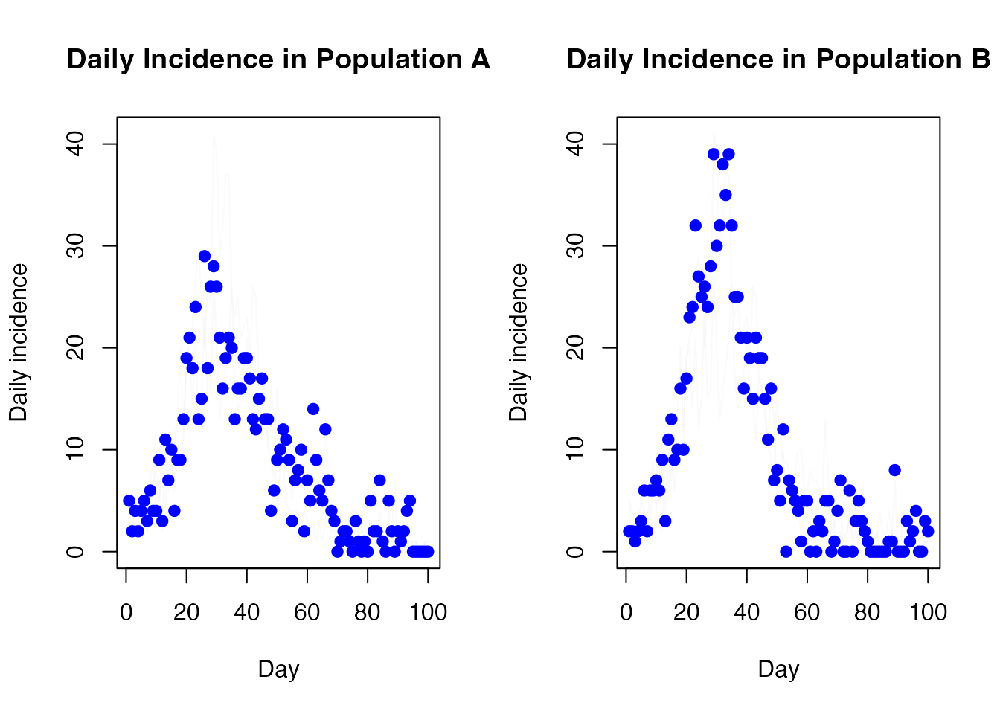
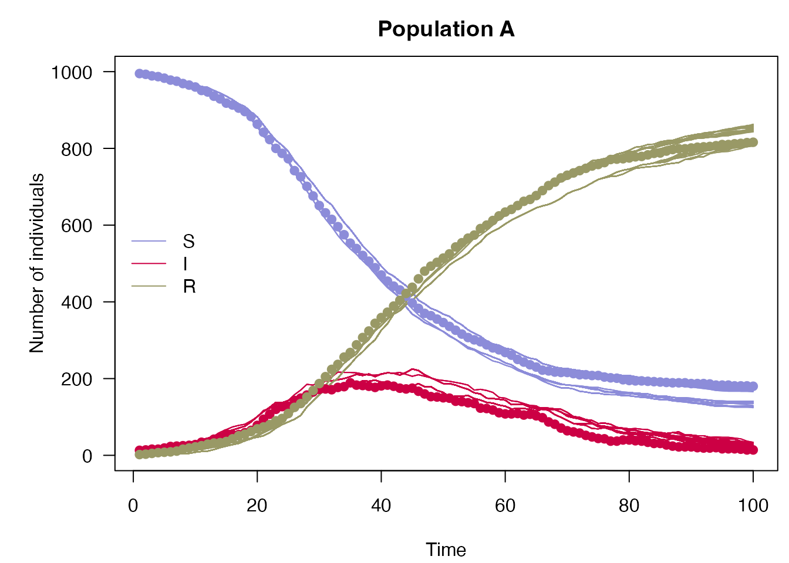
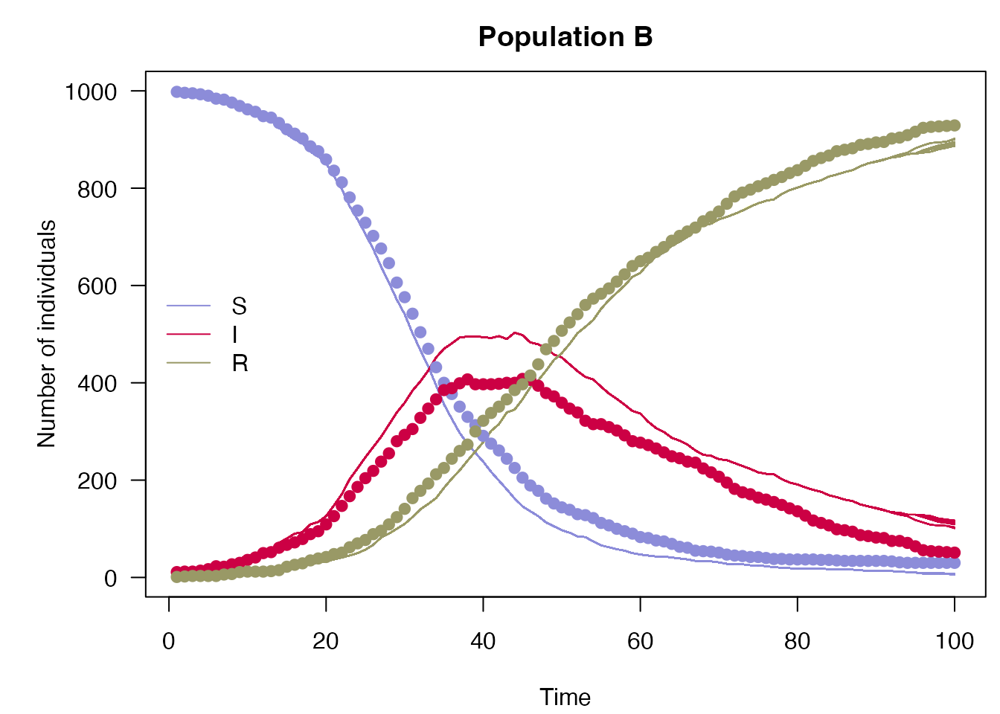

This vignette extends the SIR model in vignette("sir_models") to a “nested” model over multiple populations.
A simple definition of \(M\) SIR models is extended from the odin documentation as: \[\begin{align*} \frac{dS_i}{dt} &= -\beta_i \frac{S_iI_i}{N_i} \\ \frac{dI_i}{dt} &= \beta_i \frac{S_iI_i}{N_i} - \gamma_i I_i \\ \frac{dR_i}{dt} &= \gamma_i I_i \\ \end{align*}\] for \(i = 1,...,M\) populations.
We can model the simple case in which all \(\beta_i, \gamma_i, i = 1,...,M\) are independent, by simply implementing multiple SIR models. However the nested (or “shared”) case allows inference to be drawn on the same between populations, for example by setting \(\beta_i = \beta, \forall i = 1,...,M\).
Less abstractly, say a disease spreads in countries A and B with the same rate of infection but that healthcare is superior in country A and therefore expects a faster rate of recovery. Then the model parameters would be given as
\[\begin{align*} \frac{dS_A}{dt} &= -\beta \frac{S_AI_A}{N_A}; && \frac{dS_B}{dt} = -\beta \frac{S_BI_B}{N_B} \\ \frac{dI_A}{dt} &= \beta \frac{S_AI_A}{N_A} - \gamma_A I_A; && \frac{dI_B}{dt} = \beta \frac{S_BI_B}{N_B} - \gamma_B I_B\\ \frac{dR_A}{dt} &= \gamma_A I_A; && \frac{dR_B}{dt} = \gamma_B I_B \\ \end{align*}\]
We will model this below by extending the example from the vignette("sir_models") vignette.
As with the vignette("sir_models") vignette, the daily counts have been generated from a single run of the model.
incidence <- read.csv(system.file("nested_sir_incidence.csv",
package = "mcstate"),
stringsAsFactors = TRUE)Note that in contrast to regular SIR models, data for nested models should be in a long format and should include a factor column for populations. This is passed to mcstate::particle_filter_data(), which includes an argument, population, for specifying which column includes the population identifier.
dt <- 0.25
sir_data <- mcstate::particle_filter_data(data = incidence,
time = "day",
rate = 1 / dt,
population = "population")
rmarkdown::paged_table(sir_data)
plot(cases ~ day, incidence[incidence$population == "B", ],
type = "o", xlab = "Day", ylab = "New cases", pch = 19)
lines(cases ~ day, incidence[incidence$population == "A", ],
type = "o", xlab = "Day", ylab = "New cases", pch = 19, col = 2)
legend("topright", col = 2:1, legend = c("A", "B"), lwd = 1)The comparison function, model and particle filter are all identical to the un-nested case in the vignette("sir_models") vignette:
case_compare <- function(state, observed, pars = NULL) {
if (is.na(observed$cases)) {
return(NULL)
}
exp_noise <- 1e6
incidence_modelled <- state[5, , drop = TRUE]
incidence_observed <- observed$cases
lambda <- incidence_modelled +
rexp(n = length(incidence_modelled), rate = exp_noise)
dpois(x = incidence_observed, lambda = lambda, log = TRUE)
}
gen_sir <- dust::dust_example("sir")
n_particles <- 100
filter <- mcstate::particle_filter$new(data = sir_data,
model = gen_sir,
n_particles = n_particles,
compare = case_compare,
seed = 42L)The biggest difference between the two cases lies in the mcstate::pmcmc_parameters_nested object and associated mcstate::pmcmc_varied_parameter() function. We will separately look at the new function and then the object.
But first, in the usual case where a parameter is fixed (does not vary between populations), then the usual mcstate::pmcmc_parameter() function can be used:
beta <- mcstate::pmcmc_parameter("beta", 0.2, min = 0)For the gamma parameter, which varies between populations, we instead use mcstate::pmcmc_varied_parameter():
gamma <- mcstate::pmcmc_varied_parameter(
name = "gamma",
populations = c("a", "b"),
initial = c(0.1, 0.05),
prior = list(
function(p) dgamma(p, shape = 1, scale = 0.2, log = TRUE),
function(p) dgamma(p, shape = 1, scale = 0.15, log = TRUE)
),
min = 0
)In this example, the two populations have different initial values and priors, but the same range of values the parameter can take. Note that this function also takes the new argument populations to specify the names of the populations.
Now we can create a mcstate::pmcmc_parameters_nested object. As with the un-nested case we require a proposal for parameters, however for this object we have one matrix for fixed parameters and an array for varied parameters. Either a 3d array can be provided for varied proposals, in which case each layer (the third dimension) corresponds to a square matrix for a population, or a 2d matrix can be provided which is applied for all populations. Currently fixed/varied parameters are dependent on other fixed/varied parameters only and are independent of varied/fixed parameters.
proposal_fixed <- matrix(0.00017)
row.names(proposal_fixed) <- colnames(proposal_fixed) <- "beta"
proposal_varied <- array(c(0.0001, 0.000095), c(1, 1, 2),
dimnames = list("gamma", "gamma", c("a", "b")))
row.names(proposal_varied) <- colnames(proposal_varied) <- "gamma"
mcmc_pars <- mcstate::pmcmc_parameters_nested$new(
parameters = list(beta = beta, gamma = gamma),
proposal_varied = proposal_varied,
proposal_fixed = proposal_fixed,
populations = c("a", "b")
)Note that this final populations parameter is only strictly required if no varied parameters are included in the object. Now we are ready to run the pMCMC.
We can now continue as in the un-nested case, just be careful when analysing results to include the additional dimension of population.
control <- mcstate::pmcmc_control(500, save_trajectories = TRUE,
save_state = TRUE, save_restart = 40)
set.seed(42L)
res <- mcstate::pmcmc(mcmc_pars, filter, control = control)
t <- 0:100
par(mfrow = c(1, 2))
matplot(t, t(res$trajectories$state[2, , 1, ]), type = "l", lty = 1,
col = "#00000011", xlab = "Day", ylab = "Infected", main = "Daily Infected in Population A")
matplot(t, t(res$trajectories$state[2, , 2, ]),
col = "#00000011", xlab = "Day", ylab = "Infected", type = "l", lty = 1,
main = "Daily Infected in Population B")And the daily incidence
par(mfrow = c(1, 2))
matplot(t[-1], diff(t(res$trajectories$state[4, , 1, ])), type = "l",
lty = 1, col = "#00000005", xlab = "Day", ylab = "Daily incidence",
main = "Daily Incidence in Population A")
points(cases ~ day, incidence[incidence$population == "A", ], col = "blue",
pch = 19)
matplot(t[-1], diff(t(res$trajectories$state[4, , 2, ])), type = "l",
lty = 1, col = "#00000005", xlab = "Day", ylab = "Daily incidence",
main = "Daily Incidence in Population B")
points(cases ~ day, incidence[incidence$population == "B", ], col = "blue",
pch = 19)
plot_particle_filter <- function(history, true_history, times, population, main) {
times <- times[seq(length(times)/2)]
obs_end = max(times)
par(mar = c(4.1, 5.1, 2.5, 0.5), las = 1)
cols <- c(S = "#8c8cd9", I = "#cc0044", R = "#999966")
matplot(times, t(history[1, , population, -1]), type = "l",
xlab = "Time", ylab = "Number of individuals",
col = cols[["S"]], lty = 1, ylim = range(history), main = main)
matlines(times, t(history[2, , population, -1]), col = cols[["I"]], lty = 1)
matlines(times, t(history[3, , population, -1]), col = cols[["R"]], lty = 1)
matpoints(times[1:obs_end], t(true_history[1:3, population, -1]), pch = 19,
col = cols)
legend("left", lwd = 1, col = cols, legend = names(cols), bty = "n")
}
true_history <- readRDS("nested_sir_true_history.rds")
plot_particle_filter(filter$history(), true_history, incidence$day, 1L, "Population A")
plot_particle_filter(filter$history(), true_history, incidence$day, 2L, "Population B")